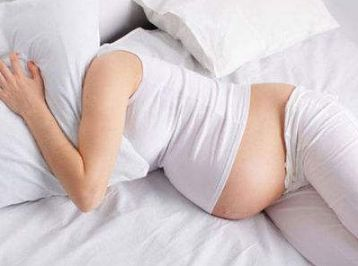

狐臭对怀孕有影响吗?很患有狐臭的人都想知道这个问题，狐臭俗称腋臭，主要症状是腋窝等褶皱部位散发难闻气味，影响患者的社会生活，严重者可以导致患者心理障碍。

狐臭可以怀孕，但孕妇患上腋臭是非常危险的，孕妇患上腋臭不仅要及时的接受治疗，对孕妇细心的照顾护理也是必不可少的，我们来看下孕期狐臭怎样护理。
1.注意卫生。专家告诉我们，每天可以用消毒药或者酒精洗澡2-3次，没有条件洗澡的，可以只清洗腋窝就可以了。腋臭的产生，其实就是一种细菌分解出来的气味，保持身体健康很重要，可以减少细菌的滋生。
2.穿通爽衣物。有些人以为穿着长袖衣服能掩盖狐臭气味，其实，只会令臭味更烈。因为长袖衣服，尤其毛衣，会增加出汗，加速细菌分解汗液，而且臭味无法散开，愈来愈臭。所以在热天，应穿着通爽、宽松、薄身的衣服。
3. 调整心态。有的孕妇经常性发怒，这样的情绪起伏不稳定，很容易使孕期的生理反应更痛苦，同时腋臭更严重，所以孕妇一定要保持愉悦乐观的心情，同时也能减少孕期的生理反应，对腋臭的预防也是很大作用的。
专家提醒：怀孕期的妈妈们本身的内分泌就很旺盛，希望以上的方法能帮助准妈妈们减轻孕期狐臭困扰。不过选择正规科学的治疗方法也是很有必要的。但怀孕期间有腋臭不要轻易尝试偏方等祛臭方式。